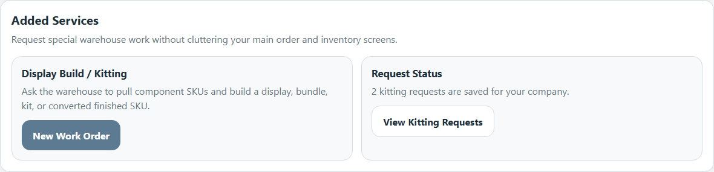
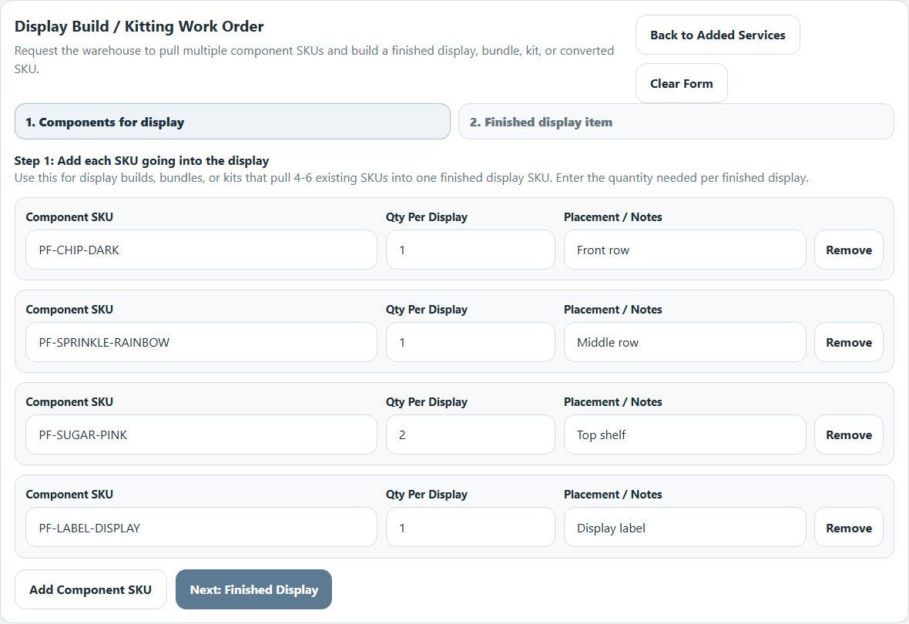
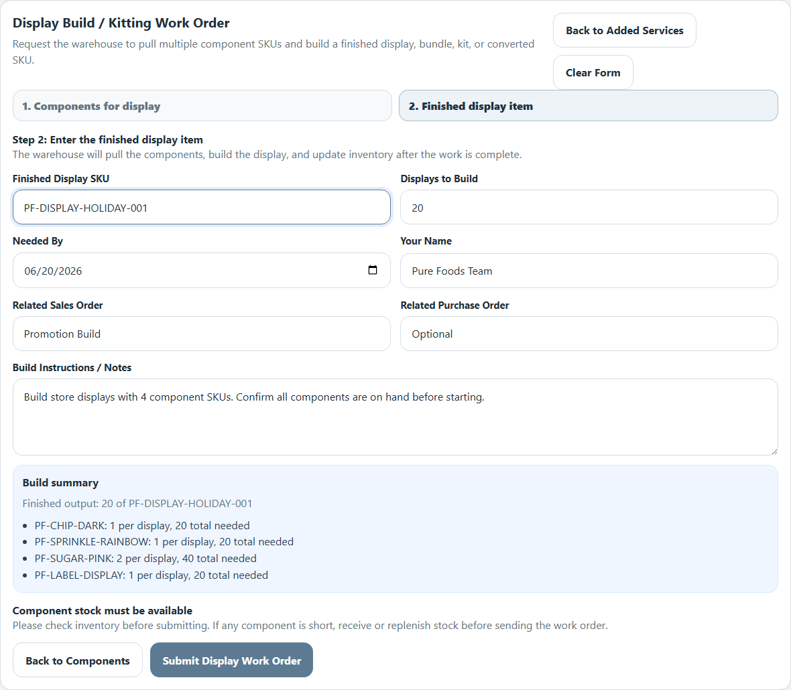
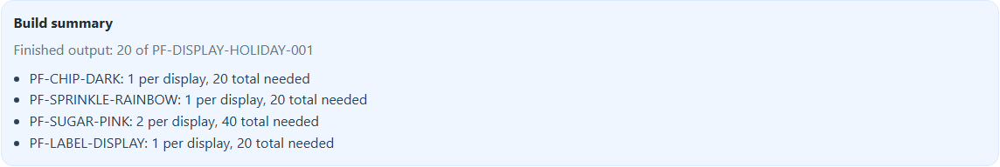
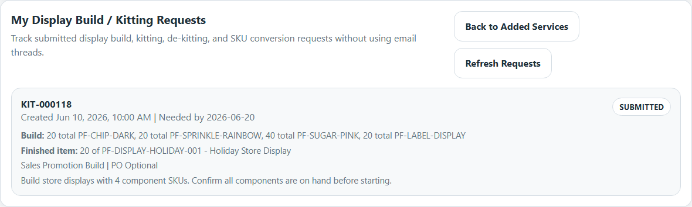

This guide shows how to request a warehouse work order to pull multiple existing SKUs and build them into one finished store display, bundle, or kit SKU.
Enabled for Pure Foods by Estee
The warehouse can only complete the work if every component SKU is available in inventory.
Go to www.wms365.co and sign in to the customer portal using your Pure Foods portal login.
After login, use the main menu to select Added Services.

Click New Work Order.
This opens the work order form for creating a display or bundle from multiple component SKUs.
Start by entering each SKU that goes into one finished display.

After components are entered, fill in the item that should be created.


Before submitting, review the summary and confirm the component totals make sense.
After submission, open My Display Build / Kitting Requests to track status.
